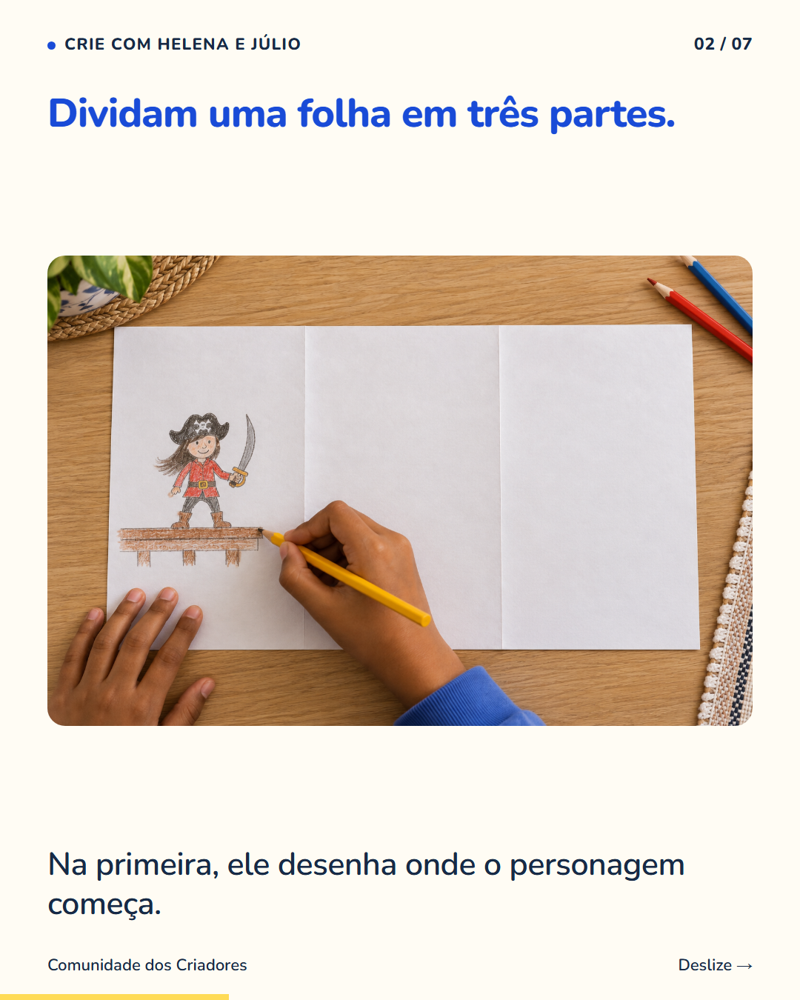
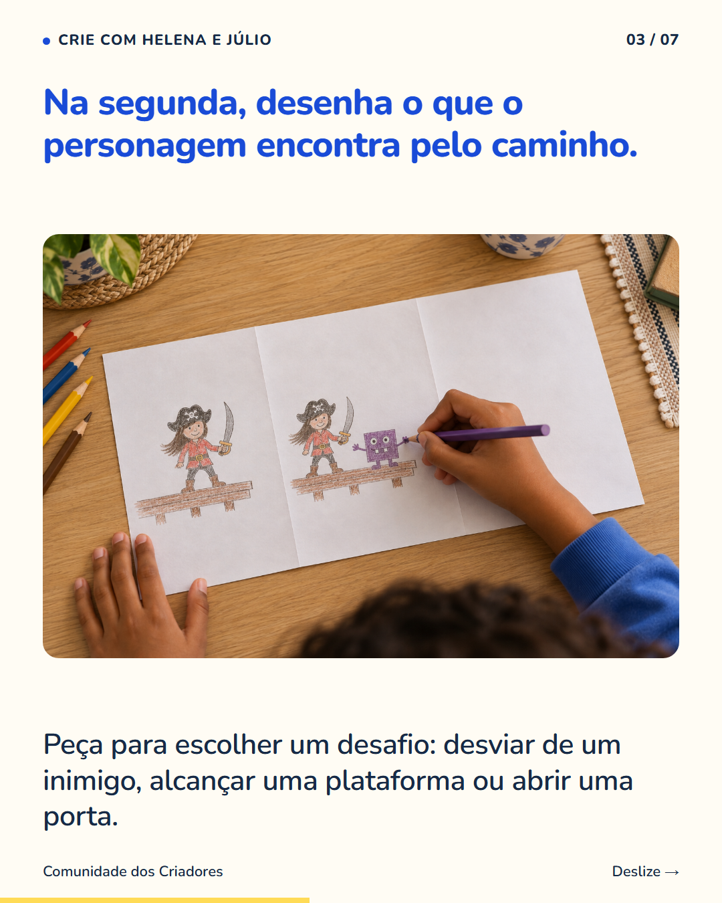
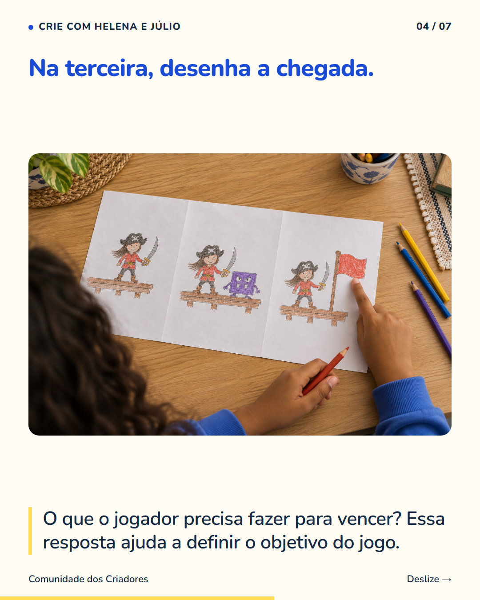
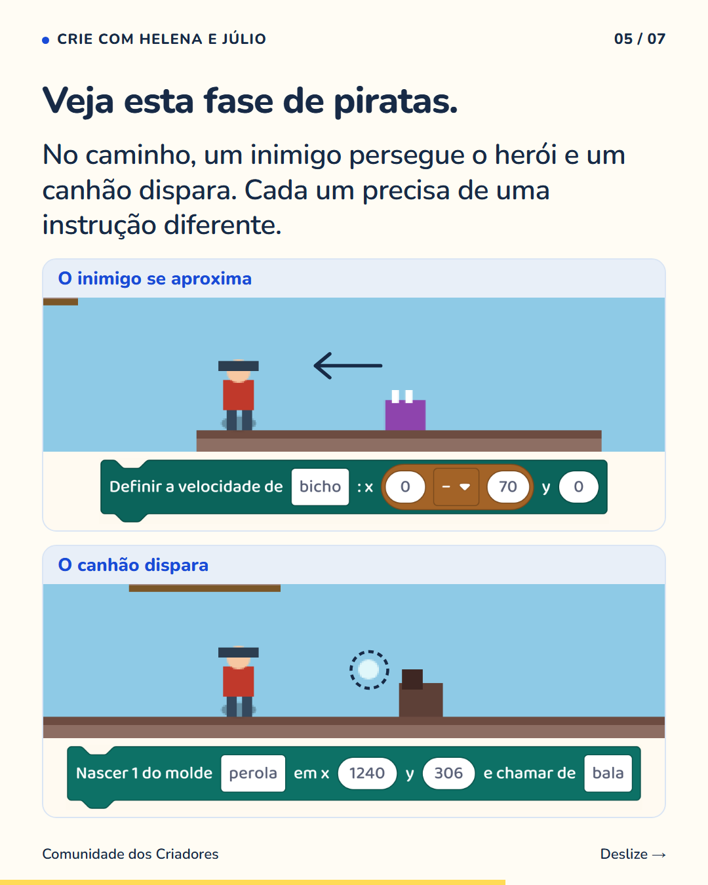
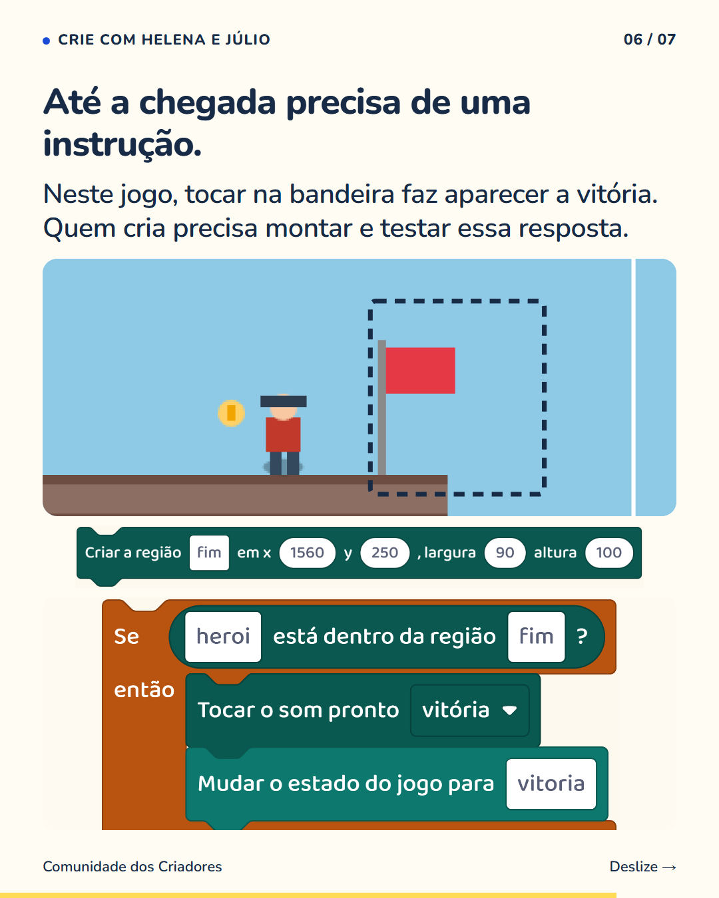
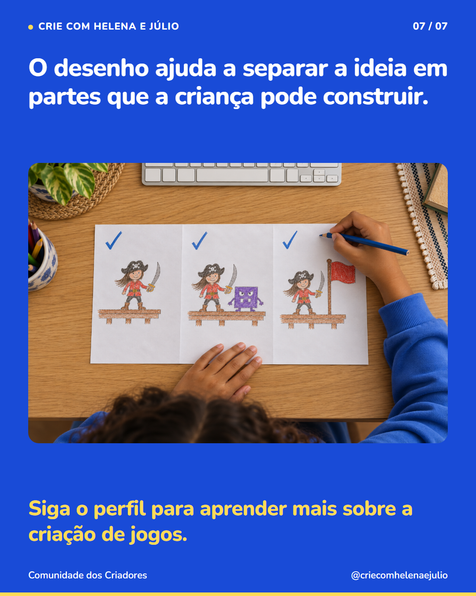

7 slides · 1080 × 1350 · Copy revisada · Do desenho ao jogo






Uma ideia fica mais fácil de começar quando a criança consegue mostrar suas partes. A folha com começo, caminho e chegada é uma forma de fazer isso. Ela ajuda seu filho a escolher onde o personagem aparece, qual desafio enfrenta e o que conta como vitória. No primeiro desenho, vale trabalhar com poucas coisas. Ao passar para o jogo, cada escolha vira uma tarefa: posicionar o herói, fazer o inimigo agir, mostrar a vitória. Depois, ele testa uma parte de cada vez. O plano também pode mudar quando surgem novas ideias. Siga o perfil para conhecer outras formas de organizar e construir um jogo.